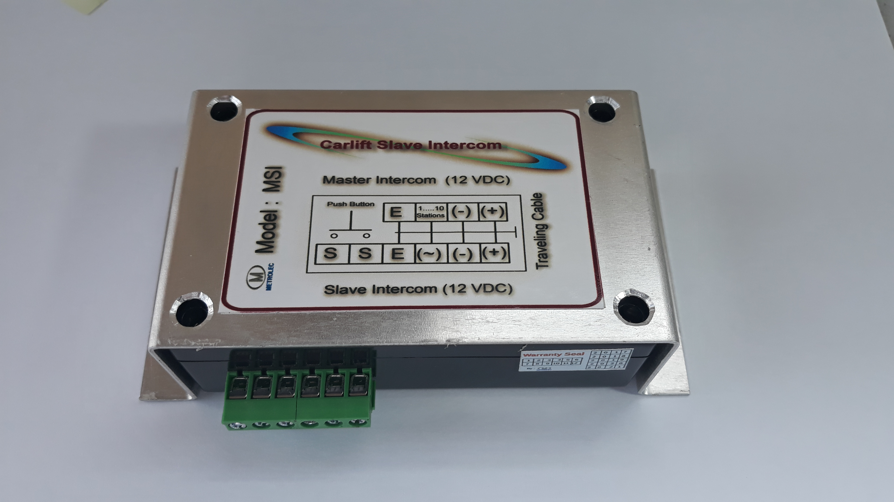

Products
Elevator Intercom System
Our reliable Elevator Intercom System compose of MP Powerpack UPS, MSI Slave Intercom and converted A- phone Master Intercom is designed for passenger elevators. Converted Master Intercoms are able to control 3, 5 and 10 substations (slaves) that can meet your various demands in elevator communications. Designed to ensure communication in demanding times especially during emergencies like brown outs or unscheduled elevator stoppages.
Powerpacks/UPS
Model MP 127M Powerpack is a reliable power supply specially designed for our Elevator Intercom System. Fully protected against internal thermal overloads, short circuits and excessive current draw. Back-up batteries are auto charged to provide reliable DC output (6.9 VDC or 13.8 VDC) upon loss of AC Power. LED are available to indicate charging, float, low voltage condition and stabilize voltage output with topping charge.

MSI Slave Intercom
Considering your modern lift elevators nowadays are using sophisticated variable speed drives and other industrial electronics that can be amplified up to 10 to 15 times in parallel resonance circuit (to pull car elevators up and down), harmonic currents are produced that resulted to distorted signals. This problem has been effectively addressed by our intercom and now considered a thing of the past giving you a loud, clear and audible voice output
